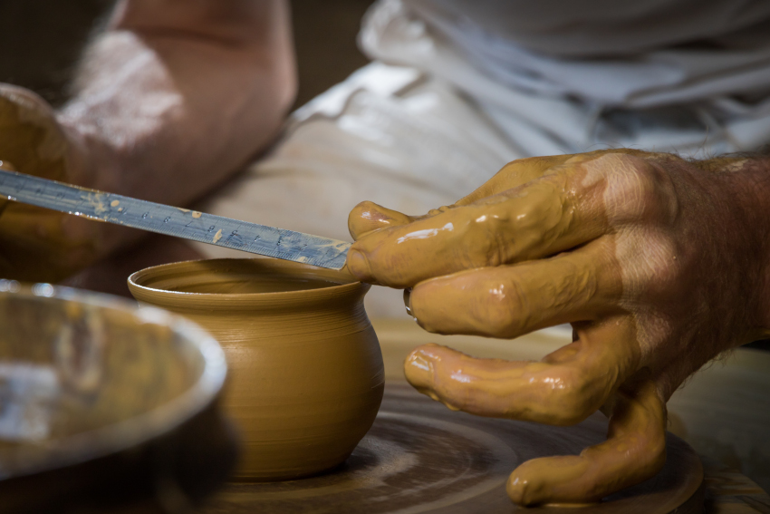

2014 : Objectif terre !
Les raisons qui m'ont poussées à changer complètement de voie sont multiples. J'aurais plaisir à les évoquer avec vous si le coeur vous en dit. Le fait est, qu'au mois de janvier 2013, j'initie ce changement pour me former au métier de tourneur en céramique.
J'effectue ma formation au CNIFOP et passe mon C.A.P en juin 2014, avec l'idée de dédier mon travail à l'univers du thé.
L'expérience est incroyable, tant sur le plan personnel que professionnel.
En 2018 le Collectif National des Céramistes me demande de prendre la présidence de l'association qui comprend 800 membres. Les compétences acquises lors de mes activités précédentes refont surface. Après avoir pris connaissance du fonctionnement, je mets en place des outils de travail à distance et instaure une dynamique collaborative, pour gérer 10 commissions différentes, dont les acteurs sont présents sur tout le territoire français.
La période COVID arrive et grand nombre de professionnels de la céramique souffrent économiquement de cette situation. Je crée un système d'accompagnement individuel pour répondre aux besoinx des adhérents, tant sur le plan de la défense de leur activité auprès des pouvoirs publics, que dans la recherche de solutions commerciales à court, moyen et long termes. Dans le même laps de temps, la DG Santé de la Commission Européenne, prévoit une évolution de la réglementation sur les Matériaux en Contact avec les Denrées Alimentaires. J'organise avec des personnes compétentes dans ce domaine, une commission qui sera en charge de faire valoir et de défendre nos intérêts auprès de la Commission Européenne.
Ce travaille associatif bénévole est sans doute une des réussites dont je suis le plus fier. car, d'une part l'organisation et la visibilité de la profession s'en trouve accrue, mais aussi parce que je ressors de cette expérience profondément changé.